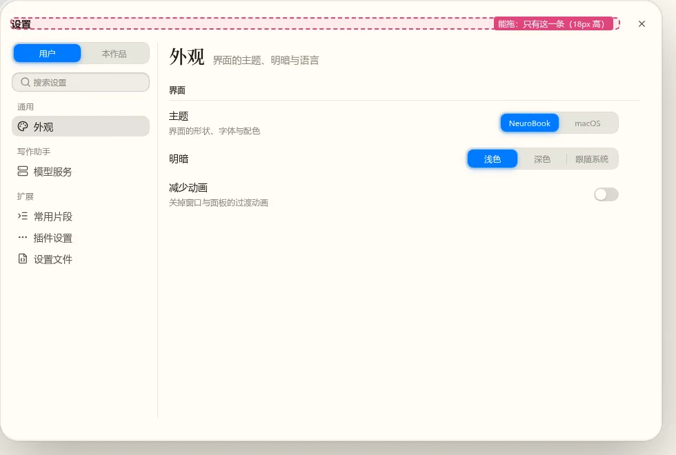
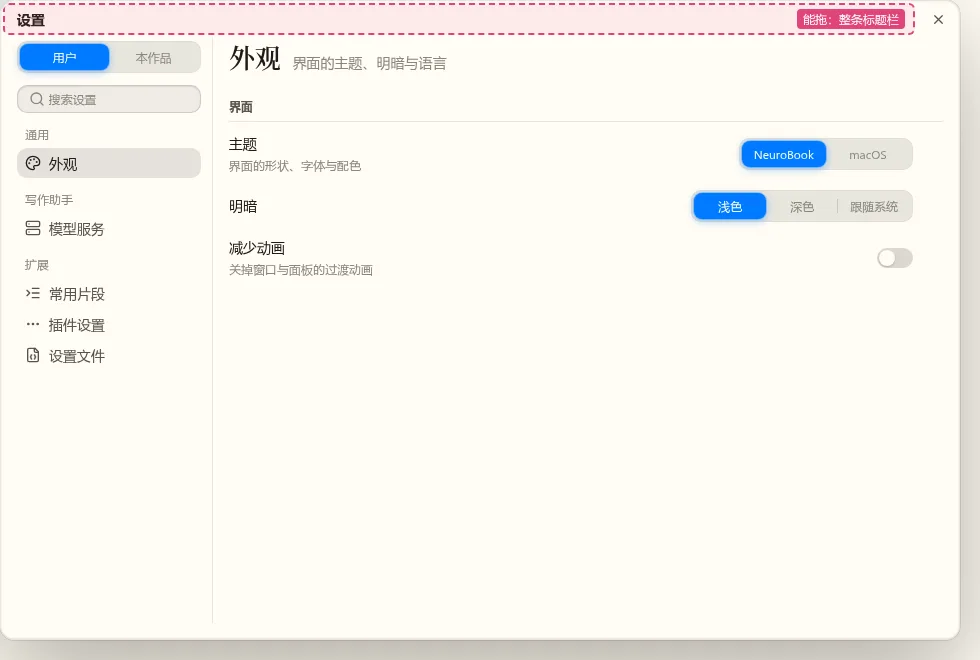
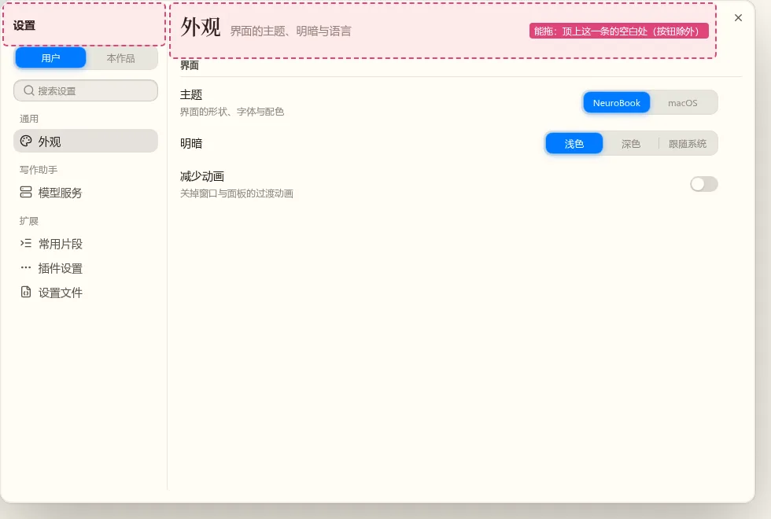
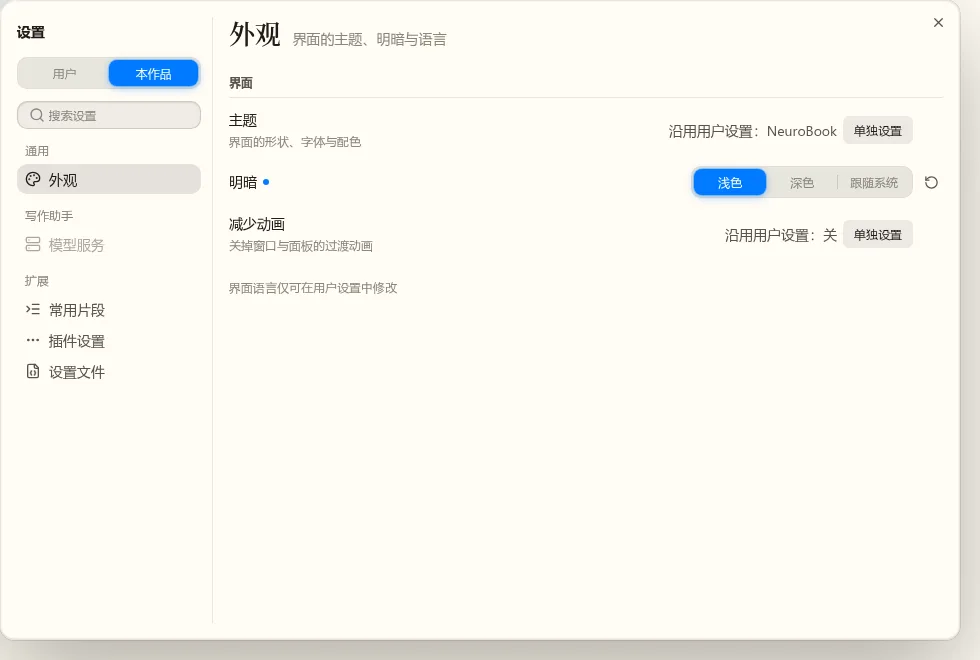
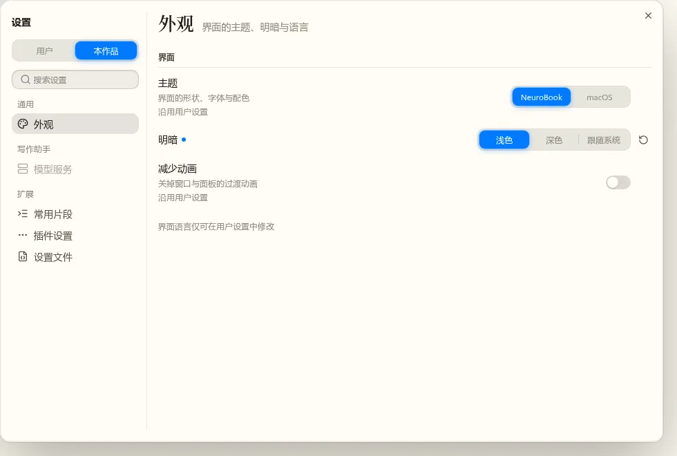
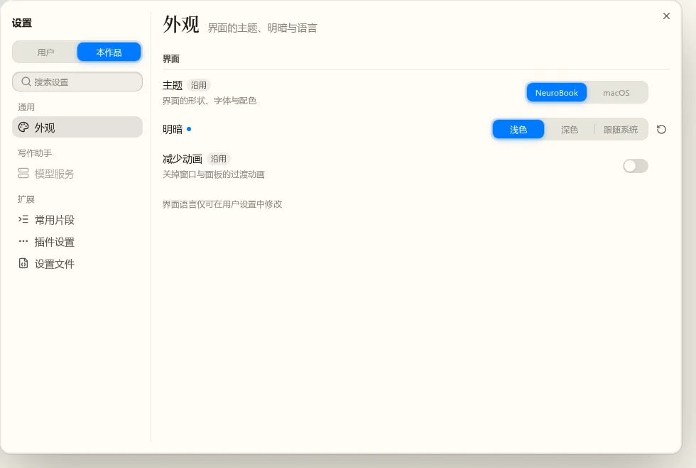
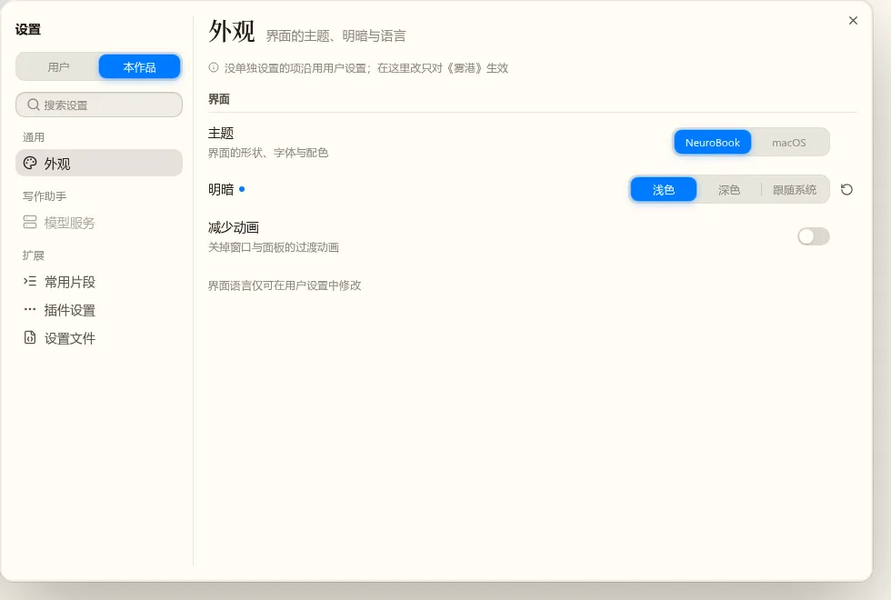

设置窗口的外框与“本作品”沿用行
w00027 t10 · 第二轮 · 2026-10-23 · 静态稿（真实 nb-ui 组件与 NeuroBook 主题，浅色，窗口 960×640）
起因：开发者看了 t06 的实现，提了两件事。
- “本作品”标签里沿用用户设置的行，现在是“沿用用户设置：NeuroBook”加一个“单独设置”按钮，能不能做得更好。
- 设置窗口拖不动、圆角太圆、标题栏太高。
查明的原因：设置窗口直接用了 nb-ui Dialog 的浮动窗口方式，外框是对话框那一套。
- 圆角 26px：照 macOS“保存”对话框定的值。
- 上边距 20px、标题、和正文隔 14px：这是对话框的排法。
- 能拖的只有“设置”两个字那一条，18px 高。
第七轮定稿的草稿其实没有这条标题栏：“设置”写在左栏顶上，关闭按钮在右上角，圆角 10px。实现时用了对话框自带的标题栏，和定稿不一样。
待定 4. 左上角的“设置”
第一轮定了去掉标题栏，你的附言：左上角的“设置”也可以去掉，不去掉就调矮。三张图的页面标题都用 20px 加粗。


推荐去掉。窗口是点齿轮或按 Ctrl+, 打开的，左栏的分区本身就说明了这是设置；读屏照样念窗口的名字“设置”（对话框的可访问名称不变）。去掉后左栏顶上的层标签和右边的页面标题在同一高度，顶边整齐，能拖的区域就是整条顶边的空白处。
待定 5. 页面标题的大小
你的附言：右边“外观”这类标题改小、只加粗。三张图左上角的“设置”都去掉了。


推荐 20px 加粗。它用的是主题现成的最大一档字号，不用另定数值；和下面 12px 的分组标题、14px 的行标题仍然拉得开层级。16px 和行标题只差两号，页面标题就压不住下面的内容了。
待定 6. 沿用标签的字与样子
你的附言：“沿用”一词是否恰当，改成“继承自 xx”是否更好。“减少动画”这一行同时有“下次会话生效”标签，用来看两种标签会不会混。后三张的标签改成描边不填色，和填色的“下次会话生效”分开。


推荐“来自用户设置”，描边。标签写出值是从哪来的，比只写“沿用”清楚，这点和你说的一样。“继承”偏技术用语，在写作软件里读起来生硬；“来自”同样说明了来源，还少一个字。描边那三种都和“下次会话生效”分得开。
已定 1. 窗口外框
决定：去掉标题栏（开发者 2026-10-23）；左上角“设置”与页面标题的附言见第 4、5 题。
粉色虚线框标出能按住拖动的地方，实际界面里没有这个框。三张图除外框之外都一样。






推荐“去掉标题栏”。内容比现状往上提了约 40px；页面自己的大标题已经说明在哪一页，不用再写一行“设置”；能拖的区域是整条顶边，和 macOS 系统设置一样。“紧凑标题栏”也能解决拖不动和太高两件事，但多一条只写“设置”的栏。三种画法都要改 nb-ui Dialog 的浮动窗口，用到浮动窗口的地方会一起变。
已定 2. 窗口圆角
决定：14px（开发者 2026-10-23）。
左上角放大两倍，外框用“去掉标题栏”。


推荐 14px。确认框会叠在设置窗口上，它的圆角不该比底下的窗口大，否则两条弧线不同心，所以窗口取 14、和确认框一样。10px 比确认框小，叠在一起时确认框显得更圆。做法是给浮动窗口单列一档圆角，不动模态对话框的 26px。
已定 3. “本作品”标签里沿用用户设置的行
决定：标题后加标签（开发者 2026-10-23）；用词与样子见第 6 题。
图里是“本作品”标签。“主题”“减少动画”没在本作品单独设置；“明暗”单独设了，所以标题后有圆点，右边有“移除本作品的设置”。（“减少动画”是为了让开关也出现在图里加的，不是真实配置项。）
后三种的共同改法：控件一直在，显示实际生效的值；改了就写进本作品层，出现圆点和“移除本作品的设置”，点它回到沿用。每行和“用户”标签下长得一样，控件右缘对齐。








推荐“行上不标”。在“本作品”标签里，大多数行都是沿用的；每行都标一遍，重复的字比内容还多。圆点本来就表示“这一层写了这个键”，在两个标签下意思一样，不用再学一种标记。顶上那句说清楚改了会怎样。做法和 VS Code 的工作区设置一致：显示生效的值，只标出改过的。
定稿后怎么做
- nb-ui
Dialog的浮动窗口按选中的外框改：拖动区域扩大到整条顶边，按钮与输入控件除外；单列浮动窗口的圆角一档。 - 设置窗口改用新外框。
- 改
settings.windowSpec 的输出 12，与SettingsRow在“本作品”标签里的画法。 - Lab 截图核对后合入 master。